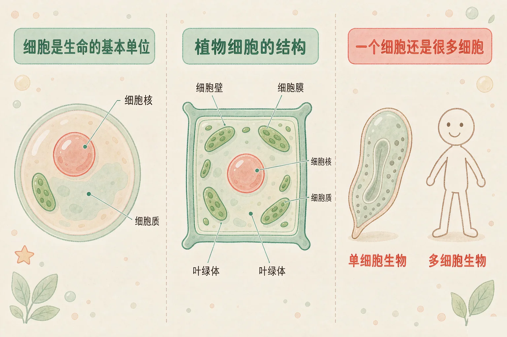
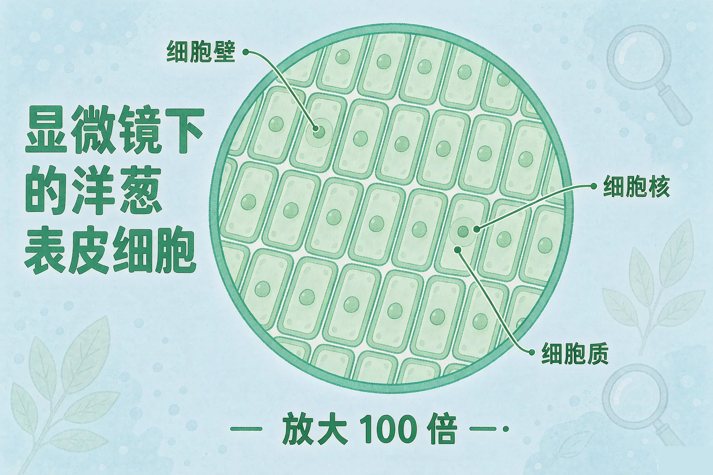
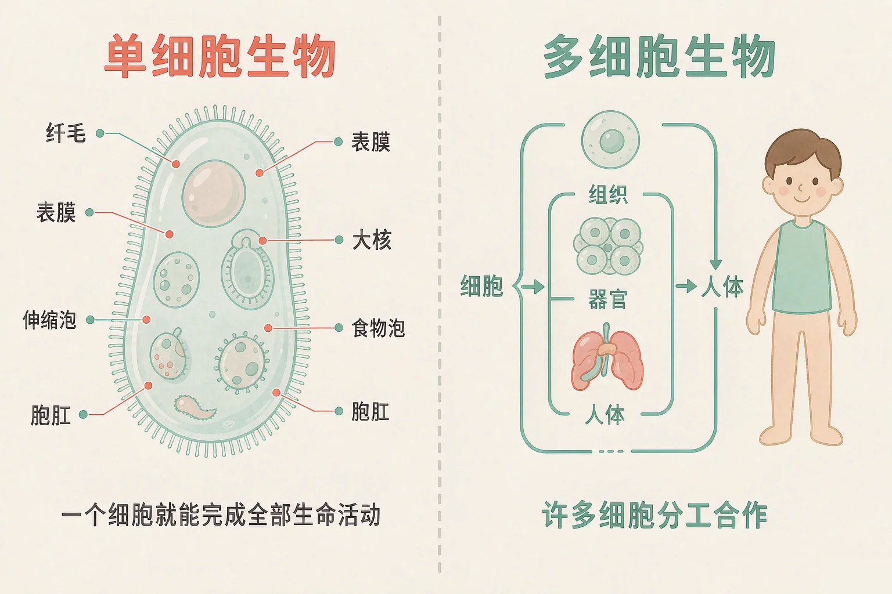

小学六年级 · 生命科学 · 生命的构成
一片薄薄的洋葱和一只小小的草履虫，身体里藏着同一个秘密——是什么？

选一个你真正好奇的问题，后面的观察和对比都会围着它转。
选择或输入后，这节课会围绕你的问题展开。
先凭直觉选一个，选完立刻看到解释——错了也没关系，正好知道要重点听哪里。
1. 一片薄薄的洋葱表皮，放在显微镜下会看到什么？
那些小格子就是细胞。洋葱表皮由许多个细胞拼成，所以看起来像一格一格的。错因提醒：常见错误是误认为生物内部是均匀的一整块，其实它们都是一个个细胞搭起来的。
2. 关于细胞，下面哪句话是对的？
除病毒外，生物体都由细胞构成，细胞是生物体结构和生命活动的基本单位。错因提醒：把细胞和病毒搞混、以为细胞肉眼可见，是这一课的高频错误。
3. 草履虫和猫相比，最大的不同是：
草履虫是单细胞生物，一个细胞就完成全部生命活动；猫是多细胞生物，细胞还会分工。这一题先记在心里。
你已经知道，动物、植物和微生物的样子差别很大。但科学家发现，它们身上藏着一个共同的秘密：身体都是由细胞搭起来的。
细胞很小
必须用显微镜才能看清，一个细胞就是一块小小的空间。
细胞里有分工
外面一层是细胞膜，里面有细胞质，中间是细胞核；植物细胞外面还有一层细胞壁。

🔍 深层理解 换个角度再看一遍这件事，看看能不能说出背后的原理。
解释它：为什么说细胞是基本单位？因为呼吸、吃东西、生长这些生命活动，都是在细胞里发生的。
比较它：动物细胞没有细胞壁，所以形状常常是圆的；植物细胞有细胞壁，所以能排成长方形，像一格一格的砖。
迁移它：医生检查身体时会取一点点组织看细胞，正是因为身体出了问题，常在细胞这一层先露出痕迹。
拖动滑块调节焦距。调到刚好的位置，细胞的轮廓会最清楚，结构名称也会一起出现。
生物可以分成两类：有的全身只有一个细胞，有的由许多细胞组成，细胞之间还会分工。
单细胞生物
草履虫、变形虫、酵母菌。一个细胞就完成了运动、吃东西、呼吸和繁殖。
多细胞生物
人、大树、猫。细胞分工以后形成组织、器官，人和动物还会形成系统。

不要误认为细胞只有多细胞生物才有。草履虫只有一个细胞，照样是完整的生物；也不要误认为组织、器官是细胞以外的东西，它们本身就是许多细胞组织起来的结果。
点一点按钮，切换草履虫和人，观察它们在细胞数目和结构层次上的差别。
题目：洋葱和草履虫都是生物。请比较它们的身体在细胞上有什么相同点和不同点。
先凭直觉选一个，选完立刻看到解释——错了也没关系，正好知道要重点听哪里。
1. 下面哪个说法是正确的？
植物、动物、微生物的身体都由细胞构成，只有病毒例外。错因提醒：最常见错误是误认为植物没有细胞，或者把细胞当成多细胞生物独有的东西。
2. 草履虫全身只有一个细胞，它为什么仍然是完整的生物？
单细胞生物虽然只有一个细胞，但生命活动一样不缺。错因提醒：常见错误是把细胞数目少误认为不算完整的生物，把数目多当成生命的必要条件。
3. 人体里肌肉、神经这些不同的细胞能一起工作，是因为：
多细胞生物的细胞会分工，先形成组织，再形成器官和系统。错因提醒：误认为细胞是孤立的，或者把组织、器官和细胞搞混，都是本课的高频错误。
下面四个生物，请你判断它的身体是一个细胞，还是许多细胞，然后写出你的观察记录。
草履虫：它的身体是
酵母菌：它的身体是
洋葱：它的身体是
人：它的身体是
写出你的观察记录：
你在显微镜下看到的洋葱表皮细胞是什么形状？它们是紧紧挨在一起，还是中间有空隙？每个细胞里都看到了什么？
先凭直觉选一个，选完立刻看到解释——错了也没关系，正好知道要重点听哪里。
1. 手指划破一个小口子，过几天就长好了。这个过程中主要在发生什么？
伤口的愈合靠的是细胞分裂，新细胞把缺口补起来。这正是细胞是生命活动基本单位的证据。
2. 一棵大树能从一粒种子长到几米高，根本原因是：
生物由小长大，靠的是细胞分裂让数目变多，以及细胞生长让体积变大。
3. 下面关于病毒的说法，哪一句是正确的？
除病毒外，生物体都由细胞构成，病毒正是那个例外。它也是上节课我们认识的微生物之一。
回到开头那片洋葱：它薄得几乎透明，可放到显微镜下，里面是一格一格排列整齐的细胞；草履虫只有一个细胞，也在认真地活着。样子差得远，构成生命的基本单位却是同一个。
讲给同桌听：请用"细胞、单细胞、多细胞、组织、器官"这五个词，说说为什么大树和一株草履虫都属于生物。
三层练习，做完第一、二层就算通关；第三层留给愿意继续探索的同学。
⭐ 基础巩固（必做）
⭐⭐ 能力应用（必做）
⭐⭐⭐ 迁移挑战（选做）
左边是学它之前要先会的，右边是学会之后可以继续探索的，下面是同一领域的伙伴知识。